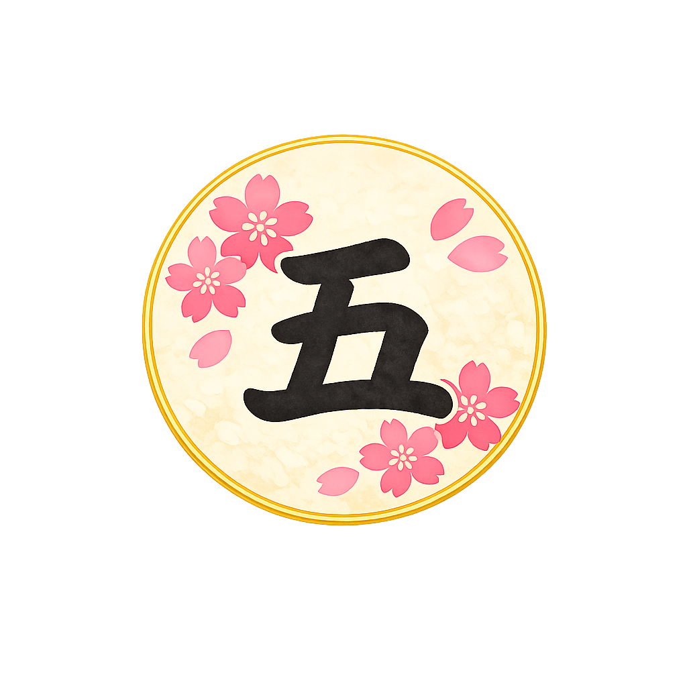

五色百人一首 読み上げ
色を選んで、順番と速度を決めて練習できます
色を選ぶ
全20枚 × 5色
青札
1〜20
桃札
21〜40
黄札
41〜60
緑札
61〜80
橙札
81〜100
モードと速度
読み上げ順
番号順（1→20）
ランダム
再生速度
等速 x1.0
x1.25
x1.5
x1.75
x2.0
1枚ずつ読む
一時停止
ヒント
全部続けて読む
現在の札
青札 1 / 20
青札
ここに和歌が表示されます
上の句と下の句を、和歌風の抑揚で読み上げます。